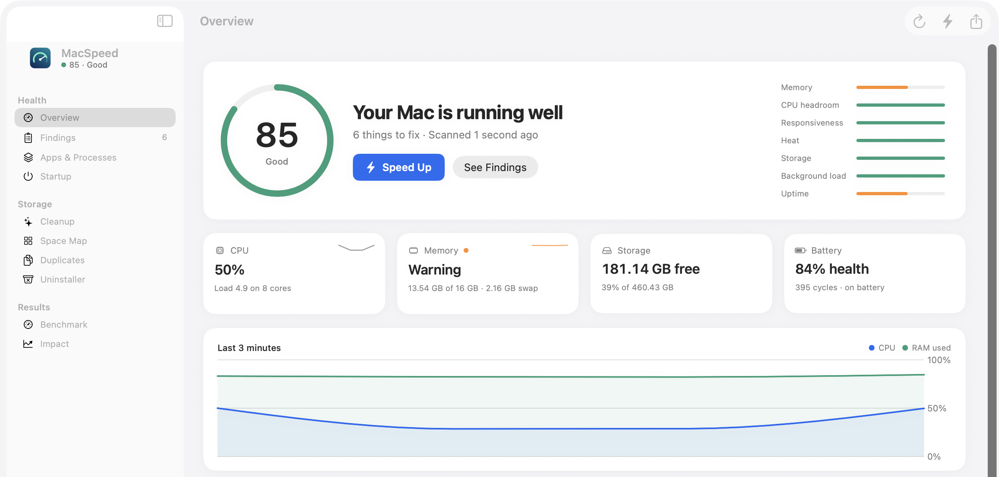

MacSpeed checks every app, your memory, heat, startup items and storage, explains what's wrong in plain English, and measures every fix before and after.
macOS 14 or later · Apple silicon and Intel · 4 MB · Everything unlocked

A real result
The first test Mac was a 16 GB M3 MacBook Air that felt slow. One scan found why.
How it works
Measures CPU per app, memory pressure, swap, heat, responsiveness and startup items. Every finding shows its evidence.
Quit the app hogging memory, disable a leftover agent, clear a cache apps rebuild. Anything disabled comes back in one click.
Memory, swap and CPU are recorded before and after each fix. If a fix didn't help, MacSpeed says so.
Features
Fixes the top issues in one pass and benchmarks your Mac before and after.
Every folder as a block sized by what it takes up. Click to go inside.
Removes an app and the data it leaves behind in your Library.
Byte-for-byte copies only. Always keeps one.
Everything that launches with your Mac, with leftovers from deleted apps flagged.
Live CPU and memory, quit the heaviest app in one click, and a weekly check.
Compute, memory, disk and responsiveness, with the conditions recorded so two runs are comparable.
Plain English
Activity Monitor says “node.” MacSpeed says what it's running, and whether it will just come back if you quit it.
nodenode · openclaw gatewayHonest by design
Install
The beta isn't signed by Apple yet, so macOS asks you to confirm the first time you open it.
Open the download and drag MacSpeed into your Applications folder.
Double-click MacSpeed. macOS says it can't check it for malware. Click Done.
System Settings › Privacy & Security, scroll down, click Open Anyway. That's it.
Scanning asks for no permissions. Space Map and Duplicates read Desktop, Documents and Downloads, so macOS asks once for each.
Pricing
Coming later
MacSpeed never deletes system files. Quitting an app asks it to save first. Disabled startup items are moved, not deleted, and come back with one click. Cache clearing only touches caches apps rebuild, and goes through the Trash.
No. Everything MacSpeed measures stays on your Mac, and the beta makes no network requests at all. See the privacy policy.
The beta isn't signed with an Apple developer certificate yet. MacSpeed 1.0 will be signed and notarized, and the warning goes away. Until then, follow the three install steps above.
App Store apps are sandboxed and can't see other apps' processes or startup items, which is the whole point of MacSpeed.
If the slowness comes from memory pressure, runaway apps, heat or startup clutter, usually yes, and you'll see the measured difference. If your Mac is simply working at its limit, MacSpeed tells you that instead of selling you a fix.